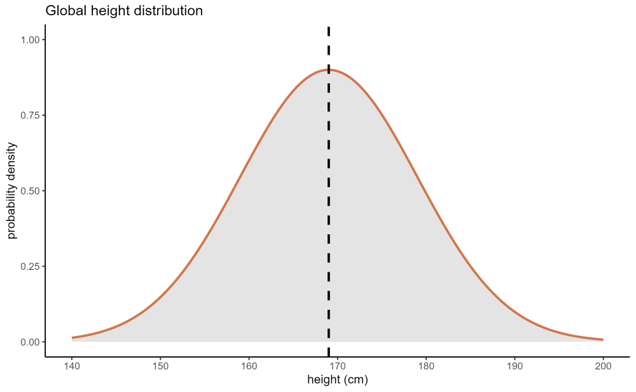
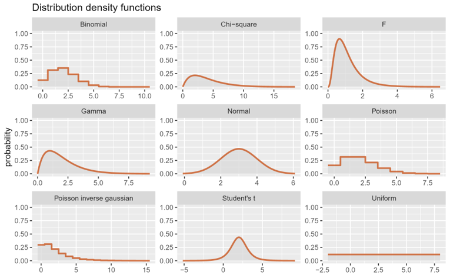

9 Dealing with non-normal data
So far, the different t-tests you’ve practiced have all made an important assumption: normality. This is an assumption specifically about the way the data are distributed.
To give you a bit of background, this page will cover first what we mean by a distribution, what’s special about the normal distribution, and then what we can do when our data don’t match this. This will give you the knowledge you need to revisit the final exercises at the end of the previous course sections, where you can have a go at some alternatives to the t-tests.
9.1 What is a distribution?
A distribution is all about probability. The technical definition of a distribution is that it is a probability function, describing a phenomenon or variable in terms of its sample space and probabilities of events. I prefer to rephrase this in my head as: a distribution describes the possible outcomes for a variable, along with how likely those outcomes are.
The example distribution below is a normal distribution, also known as a Gaussian distribution or sometimes a “bell curve”, representing height across the global human population:

On the x axis, we have our variable of interest - height, measured in cm. On the y axis is probability density, which reflects the relative likelihood of the values along the x axis. So, when the curve peaks in the middle, that reflects that a height of 169cm is the most likely value for us to measure, if we were drawing totally randomly from all the humans in the world. At the tails of the distribution (where it drops away at either side), we have heights that we are much less likely to observe.
We use parameters to describe distributions (and statistics to describe samples - and then we try to estimate parameters from those statistics!). The normal distribution, specifically, is described by two important parameters: the mean, and the standard deviation (a measure of variation). As these two numbers change, so does the precise shape of the bell curve; smaller standard deviations lead to narrower curves, and as the mean increases/decreases, the curve will shift up and down the x axis.
9.2 Going beyond the normal distribution
The normal distribution is really important in statistics, and for most of the analyses we perform in the course, normality will continue to be one of the key assumptions.
However, we can’t always assume normality. The bell curve is not the only distribution that exists in the world - in fact, you may well be familiar with some of the others. Here’s a few examples, to hopefully get you thinking a little bit about distributions more broadly:

The main point of this figure is not to encourage you to memorise all the possible distributions that exist - in fact, for now, if you only remember the normal distribution, I’m very happy with that. It’s mostly just to flag up that other distributions exist, and how they look relative to the bell curve you’re used to seeing.If you’re interested in learning more about some other distributions, though, I’ve added a bit of info below about some of the more common ones!
The uniform distribution is just a flat line - i.e., the value of y is constant across all values of x. So, all outcomes are equally relatively likely as each other.
A classic example of a real-world phenomenon that follows a uniform distribution is a standard six-sided die. Each time you roll the die, the likelihood of each of the six numbers coming up is 1/6. Each outcome is equally likely - contrast this to a normal distribution, where outcomes closer to the mean are much more likely to occur, compared to extreme values far from the mean.
A uniform distribution has two parameters: the minimum (a) and maximum (b). In the case of the six-sided die, a = 1 and b = 6. The probability of any values outside of this range would be 0.
This one isn’t shown on the figure above (although technically, the exponential distribution is a special case of the gamma distribution). The exponential distribution is a gradually decreasing curve that asymptotes towards zero as x increases.
The exponential distribution is most often used to describe the amount of time until an event takes place, such as in time-to-event or survival analysis in biology. A more fun example, though: the value of the change you have in your pocket also roughly follows an exponential distribution!
This distribution has one parameter, \(\lambda\), the rate parameter (i.e., how steep is the drop-off in y as x increases).
I want to flag these distributions here for any of you who are a bit more interested in how the maths of statistical hypothesis testing works. F, t and chi-square are all examples of a statistic - a value that we can calculate from our dataset using some formula. Each of these statistics have their own distributions, which is what allows us to calculate a p-value from them. Once you’ve calculated the statistic, you can find the probability of getting that value or higher by calculating the area under the curve (or, more specifically, letting R/Python do that calculation for you!).
An additional note about statistics distributions: they look a little different depending on the number of degrees of freedom. So, the same value for a statistic will be associated with a different probability for samples of different sizes. This is why, when we report the results of a statistical test, we also give the degrees of freedom in brackets, e.g., t(31) = 1.984, p < 0.05.
You will occasionally hear statisticians talking about the kurtosis or skewness of a distribution, relative to the normal distribution.
Kurtosis is a measure of how often outliers occur; you’ll also sometimes see people talking about the “tailedness” of a curve. The perfect normal distribution is what we refer to as “mesokurtic”, and we use this as our baseline. A curve can be heavy-tailed, or “leptokurtic”, which means it is more peaked and narrow than the standard normal distribution, with wider/fatter tails - the range of values that are considered extreme/outliers is wider than in the normal distribution. The Student’s t distribution, shown above, is heavy-tailed. A curve can also be light/thin-tailed, or “platykurtic”, which means that it’s flattened and stretched wider than the normal distribution. An extreme example of a platykurtic distribution is the uniform distribution, which has absolutely no curve to it at all - and therefore, by definition, there is actually no such thing as a outlier in the uniform distribution!
Skewness is a little easier to get your head around - it refers to the symmetry, or lack of symmetry, of a distribution. The perfect normal distribution has no skew, because it’s perfectly symmetrical. The F and gamma distributions shown above, relative to the normal distribution, have what we refer to as positive or right skew, because the right hand tail extends much further out. The opposite is called negative or left skew.
9.3 Dealing with non-normal data
The tests you’ve looked at so far - one-sample, paired and Students’ t-tests - as well as other tests that you’ll be learning about shortly, all make an assumption of normality. They’re known as parametric tests - parametric, because they make assumptions about the parameters of the underlying distribution that the data are drawn from.
However, not all variables in the world are normally distributed. So what do we do when they’re not?
In contrast to parametric tests, there exists a number of tests that are non-parametric. They don’t assume that your data are normally distributed. (Note that not assuming normality doesn’t mean they don’t make any assumptions - we still typically expect the datapoints to be independent, and sometimes we expect the distribution to at least be symmetric, if not normal.)
This means, in situations where we can’t assume normality and we don’t have the ability to transform our dataset, we can fall back on these tests instead.
Below is a little cheat-table, that gives you some ideas of the non-parametric equivalent of popular parametric tests. As we go through the course, you’ll start practising both.
| Type of analysis | Parametric test | Non-parametric test |
|---|---|---|
| Comparing two independent groups | Students’ t-test | Mann-Whitney U test (aka Wilcoxon rank-sum test) |
| Comparing paired samples | Paired t-test | Wilcoxon signed-rank test |
| Comparing 3+ groups | One-way ANOVA | Kruskal Wallis test |
| Correlation | Pearson’s r | Spearman’s \(\rho\) |
| Testing frequency distributions | N/A | Chi-square tests |
Now that you know this, you can go back to the previous section on different types of t-test and complete the additional exercises at the bottom of each page.
9.4 Summary
- A distribution is a probability function that represents the possible values a variable can take, and the relative likelihood of those values occurring
- The normal distribution comes up often in statistics to describe continuous variables, but there are many others
- Parametric tests assume normality, but when we aren’t able to satisfy this assumption, we may be able to run a non-parametric test instead